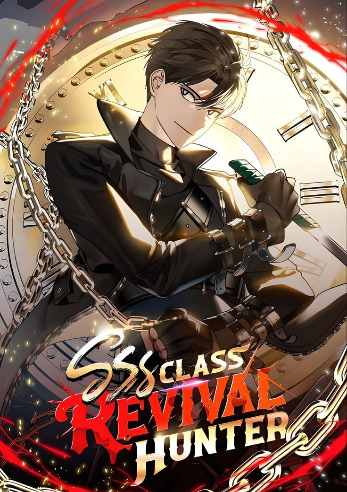
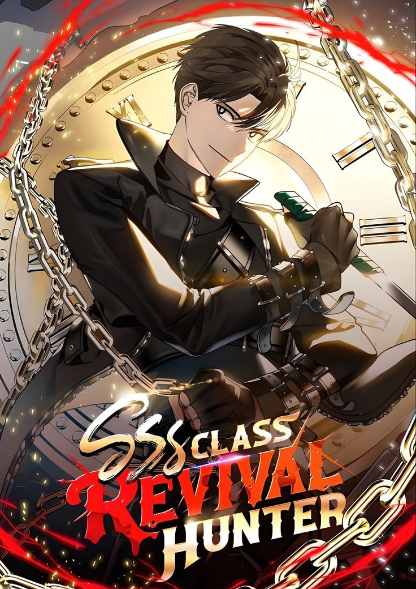

My Journey
My journey as an ICT student starts with a curiosity. When I'm at the age of 12. At such age, I'm already immersed on the internet. And that is when I discovered Minecraft.
The moment I discovered Minecraft, I instantly fell inlove to it. From its colorful vibe, interesting game mechanics, and especially its Command Block.
A command block in Minecraft is a special block that lets players run commands automatically, like coding inside the game.
By using it, you can create custom events, automate actions, or even build mini-games using logic, just like writing a program.
The way it turns simple text commands into powerful effects feels a lot like seeing code come to life. And I especially love the feeling of seing your work—that you spend plenty of time to just to make it work—come to life and doing what you want it to do.
I initially wanted to study STEM, but seeing as I am struggling, I decided that I would rather chase my dream of being a game developer or web designer, thats why I am here, studying ICT.
 
